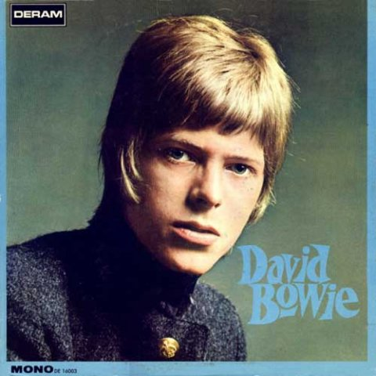
David Bowie
1967
Психоделический поп, психоделический фолк, барокко-поп, мюзик-холл
Read
more
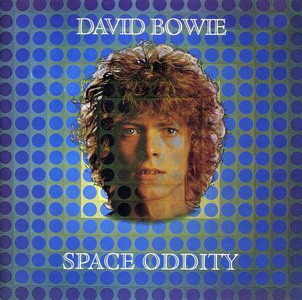
Space Oddity
1969
Фолк-рок, прогрессив-рок
Read
more
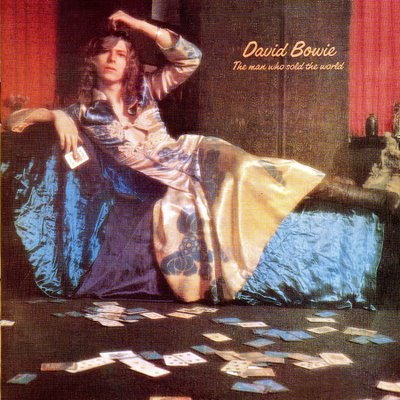
The Man Who Sold the World
1970
Хард-рок, хэви-метал, блюз-рок, фолк-рок
Read
more
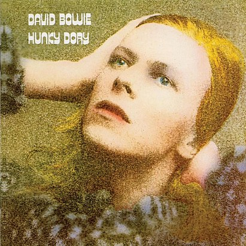
Hunky Dory
1971
Арт-поп, поп-рок
Read more
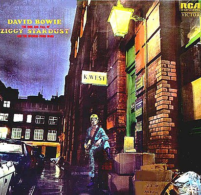
The Rise and Fall of Ziggy Stardust and the Spiders from Mars
1972
Глэм-рок, рок-опера, протопанк
Read
more
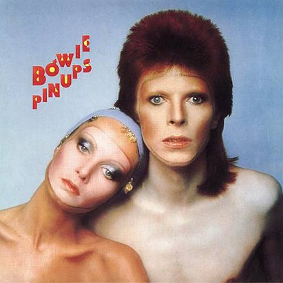
Pin Ups
1973
Глэм-рок, прото-панк
Read more
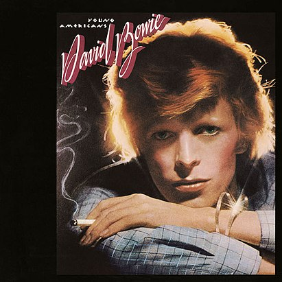
Young Americans
1975
Голубоглазый соул, R&B, Филадельфийский соул
Read more
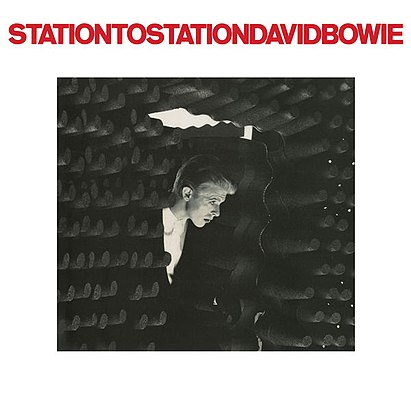
Station to Station
1976
Фанк-рок, арт-рок, спэйс-рок, соул, ритм-н-блюз
Read more
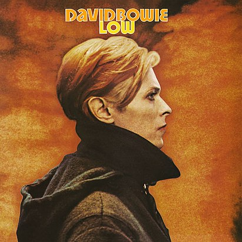
Low
1977
Арт-рок, авант-поп, электроника, эмбиент, экспериментальный рок
Read
more

Heroes
1977
Арт-рок, экспериментальный рок, электронная музыка, арт-поп, эмбиент
Read
more
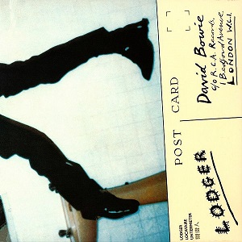
Lodger
1979
Арт-рок, экспериментальный рок, авант-поп, этническая музыка
Read more
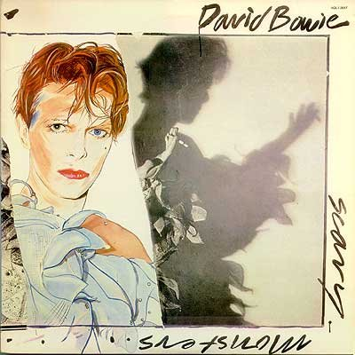
Scary Monsters (and Super Creeps)
1980
Арт-рок, новая волна, пост-панк
Read more
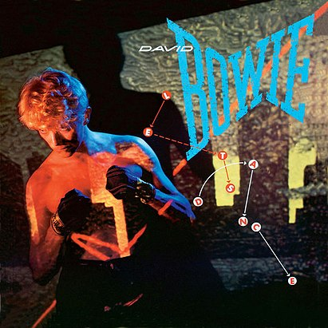
Let’s Dance
1983
Дэнс-рок, новая волна, постдиско
Read more